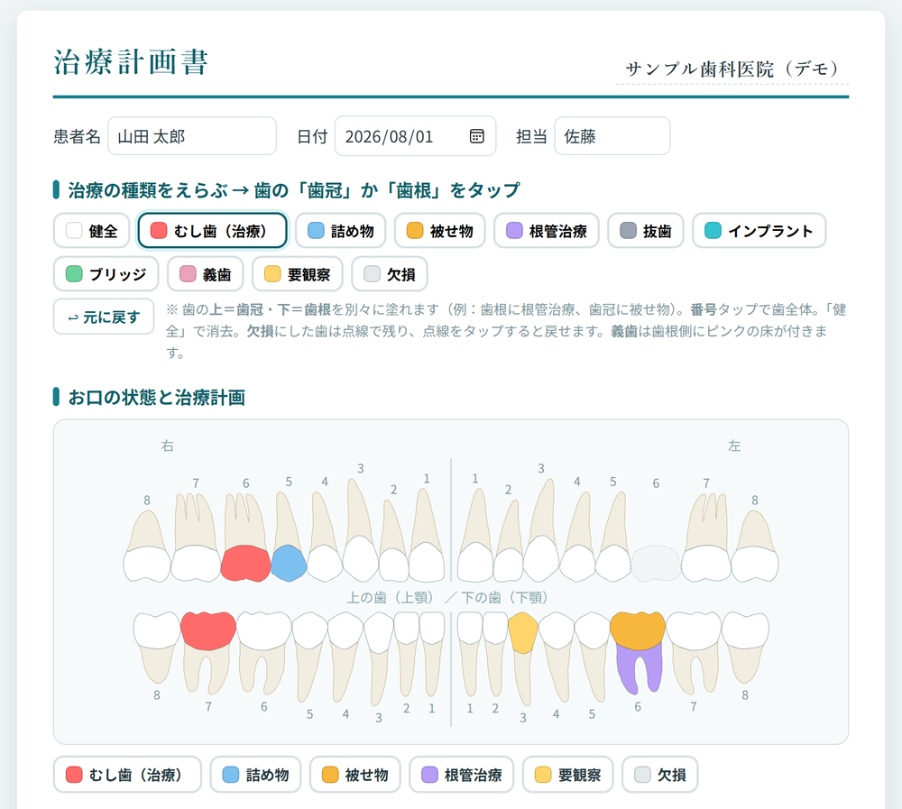
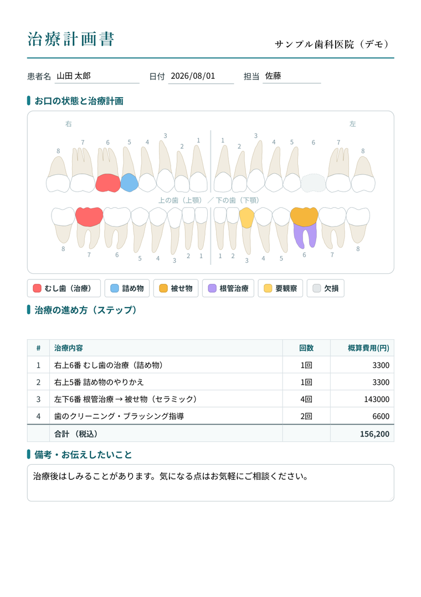
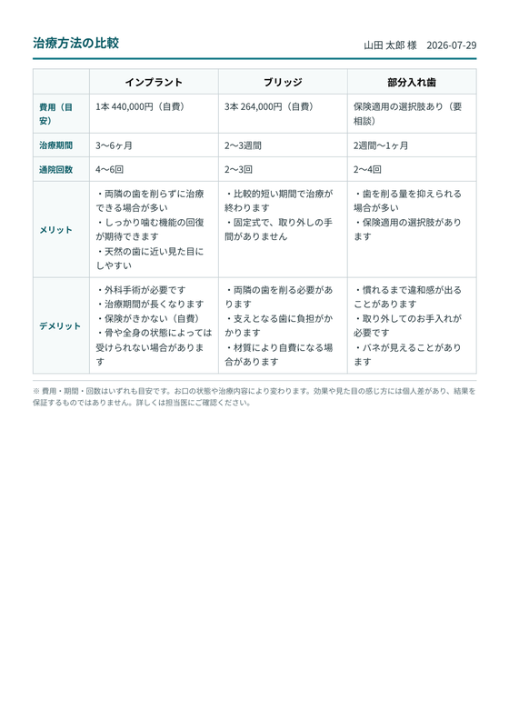
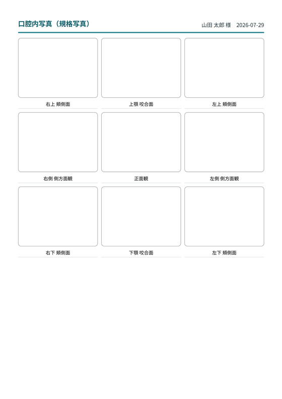
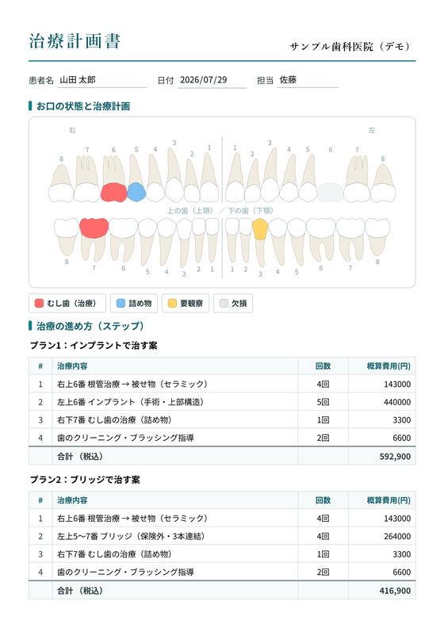

歯科の治療計画書を、
その場で作って印刷できる。
歯をタップして色分け。費用は自動で合計。そのまま印刷して患者さんにお渡しできます。
インストール不要・登録不要・無料。ブラウザで開くだけです。
現役の歯科医師が、自院で使うために作りました。
このツールは診断や治療方針の判断を行いません。

使い方は3ステップ
治療の種類をえらぶ
むし歯・詰め物・被せ物・根管治療・インプラント・義歯・欠損など。
歯をタップして塗る
歯冠と歯根を別々に塗り分けられます。番号をタップすれば歯全体。
そのまま印刷
治療ステップと費用を入れれば、A4の1枚ができあがります。
できあがるのはこの1枚
手書きやExcelで作っていた治療計画書を、画面で組み立てて、そのまま印刷するためのツールです。テンプレートではなく、タップして塗る・自動で計算する「動くソフト」です。
- 歯式（32本の歯並び図）をタップして色分け
- 歯冠と歯根を別々に塗り分け（例：歯根に根管治療、歯冠に被せ物）
- 治療ステップを入力すると費用を自動で合計
- 費用欄は計算式が使えます（350000×2、35万、値引きの -5000）
- 税込／税別の表記を切り替え
- 治療後の状態を、別の歯式チャートで並べて見せられます
- ブリッジは連結して、インプラントはスクリューを描いて表現します

患者さんのデータを、自動で保存しません
このツールが自動でデータを保存することはありません。入力内容が知らないうちに端末やクラウドに溜まっていく、ということがない設計です。開発者のサーバーへ患者情報を送信することもありません。
詳しくはプライバシーポリシーをご覧ください。
無料版とWindowsアプリ版のちがい
治療計画書を作って印刷するところまでは、どちらも無料で全部できます。Microsoft Store のアプリも本体は無料です。
動作環境：Windows 10 バージョン 2004（ビルド19041）以降 / Windows 11
アプリ版のフル機能で作れる書類
いずれも架空の記入例です
治療オプション比較表
（別紙）
ひな形は2種類（歯を失った場合、被せ物の材質）。空欄から自分で作ることもできます。文面はすべて編集できます。

口腔内写真の規格写真台紙
（3×3）
9枚の規格写真を、部位のラベル付きで1枚の台紙にまとめられます。空欄で印刷すれば貼付台紙になります。

複数の治療プランを
1枚に並べる
「インプラントで治す案」「ブリッジで治す案」のステップと合計費用を並べて見せられます。それぞれに歯式も追加できます。
よくある質問
本当に無料ですか。登録は必要ですか。
Web版は無料で、会員登録もメールアドレスの入力も必要ありません。ページを開けばすぐ使えます。
患者さんの情報は残りませんか。
ツールが自動で保存することはありません。画面を閉じると入力内容は消えます。印刷したもの、および Windows アプリ版で「下書きを保存」を押して作ったファイルは、医院の管理下に残ります。
スマホやタブレットでも使えますか。
ブラウザがあれば表示できます。ただし歯をタップして塗る操作と印刷を前提にしているため、チェアサイドのPCやタブレットでのご利用を想定しています。
Mac では使えますか。
無料Web版はブラウザで動くのでご利用いただけます。Microsoft Store のアプリ版は Windows のみです。
診断や治療方針を提案してくれますか。
いいえ。このツールは診断・治療方針の判断を行いません。歯科医師が決めた内容を、患者さんに分かりやすい書類にまとめるための道具です。
院内で複数の端末から使えますか。
無料Web版は台数の制限なくお使いいただけます。アプリ版のフル機能の利用条件は Microsoft Store の標準の利用条件に従います。分院や複数端末での運用はお問い合わせください。
まずは1枚、作ってみてください。
インストール不要・登録不要・無料。ブラウザで開くだけです。
このツールは診断や治療方針の判断を行いません。